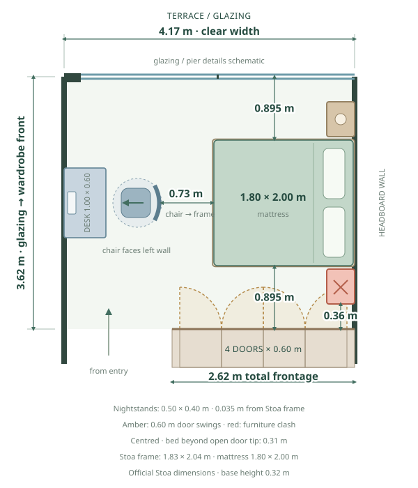
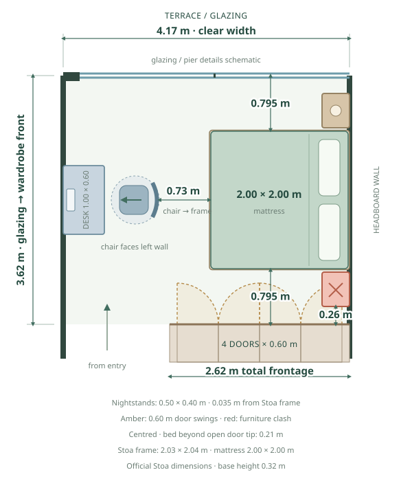
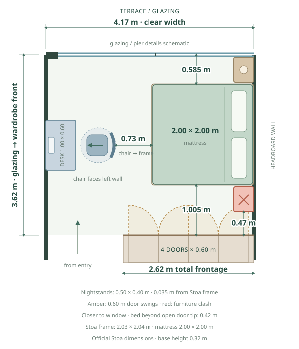

BEDROOM / INTERIOR DESIGN
Bedroom.
A calm bedroom, built around your actual room and fitted wardrobes. Material boards have their own tab ↗
01 / FLOOR PLAN & FURNITURE FIT
Centred or closer to the window.
Compare the 1.80 × 2.00 m and 2.00 × 2.00 m mattresses at the same scale: centred above, shifted toward the window below. The 1.60 m option is removed. Both nightstands stay 0.50 m along the wall × 0.40 m deep, unrotated, with 0.05 m to the mattress (0.035 m to the Stoa frame). The left-wall 1.00 × 0.60 m desk and left-facing chair stay in place.
Selected design layout: 1.80 × 2.00 m, closer to the glass. Woodendot Stoa in Walnut Decor has a verified overall base of 1.83 × 2.04 × 0.32 m. These exact frame dimensions replace the earlier generic allowance. The other layouts stay available for comparison.
1.80 × 2.00 m
CENTRED
2.00 × 2.00 m
CENTRED
1.80 × 2.00 m
CLOSER TO WINDOW · shifted 0.29 m2.00 × 2.00 m
CLOSER TO WINDOW · shifted 0.21 m
Shifted 1.80 m: move the bed 0.29 m toward the window. The wardrobe-side nightstand is 0.65 m from the closed doors, leaving 0.05 m beyond their 0.60 m opening sweep. The window-side nightstand stays 0.07 m from the glazing. These proposed footprints clear the modelled door swings.
Shifted 2.00 m: move the bed 0.21 m toward the window, keeping the unchanged window-side nightstand 0.05 m inside the glazing. The bed is 0.60 m from the window and 1.02 m from the closed wardrobes. The wardrobe-side nightstand then sits 0.47 m from their front: its 0.13 m overlap with the 0.60 m door sweep is marked red. Furniture stays inside the room; neither nightstand is rotated or reduced.
Four 0.60 m wardrobe leaves use the owner’s assumption. Their 2.62 m overall frontage is derived from 4.17 − 1.55 m; the remaining 0.22 m is shown as schematic end margins. All dimensions are in metres. The exact Stoa frame footprint is included. Curtains, extra protrusions beyond the stated overall frame, and exact hinge offsets still need considering when selecting products. The chair-to-frame gap is 0.73 m in every option. The Stoa frame leaves 0.035 m between it and each unchanged nightstand.
| Space remaining | 1.80 m Centred | 2.00 m Centred | 1.80 m Closer to window | 2.00 m Closer to window |
|---|---|---|---|---|
| Stoa frame → glazing | 0.895 m | 0.795 m | 0.605 m | 0.585 m |
| Stoa frame → closed wardrobes | 0.895 m | 0.795 m | 1.185 m | 1.005 m |
| Nightstand → wardrobe front | 0.360 m | 0.260 m | 0.650 m | 0.470 m |
| Window nightstand → glazing | 0.360 m | 0.260 m | 0.070 m | 0.050 m |
| Chair → Stoa frame | 0.73 m | 0.73 m | 0.73 m | 0.73 m |
| Conflict | Wardrobe door | Wardrobe door | None in shown footprints | Wardrobe door: 0.13 m |
Source: measured plan and bedroom photographs. Clear sleeping area: 4.17 m wide × 3.62 m glazing-to-closed-wardrobe-front. Door opening shown at 90°. Unlabelled cabinet, pier and trim details schematic; entry beyond crop. Terrace-door marker centred within the glazing opening. Measurements & calculations ↗
02 / INTERIOR DESIGN
Stoa walnut & black workspace.
Selected window-shifted 1.80 × 2.00 m layout, walnut Stoa storage bed, matching freestanding nightstands and a black sit/stand desk with a black office task chair. Room visuals are generated concepts; use the measured floor plans for exact clearances.
Loading bedroom proposals…
CHOOSE THE LEFT IMAGE
Generated concepts can vary slightly in perspective.
No styles match this filter.
New bedroom styles and revisions will be collected here, with tiles, full-width viewing and drag comparison. Generated images are saved in MyApartment / 4 - Interior design proposals as bedroom-<style>-<index>.png.
03 / ORIGINAL PHOTOS
Your bedroom now